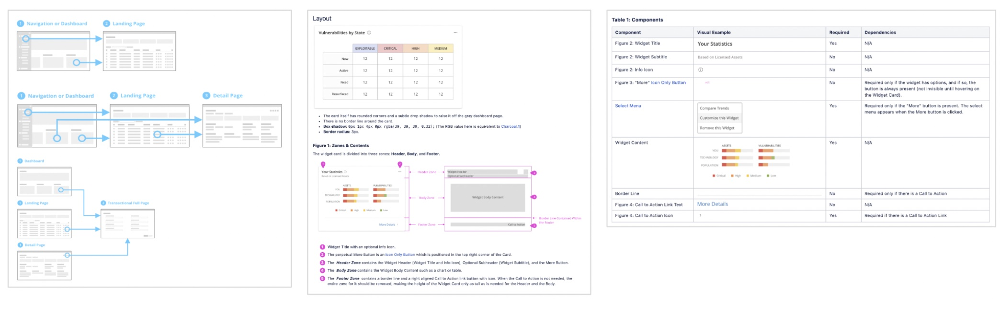

Design System
The scope and management of a design system is often in flux. While everyone agrees that it is needed, they often disagree over what it means and why it’s helpful.
I believe that a strong design system serves anyone who wants to design, regardless of role and level of awareness of ‘user experience’ as a discipline. A design system enables whoever uses it to create designs that are both consistent across flows and adhere to a set of design principles. Moreover, a well-crafted system that maps design components to code is easy to implement and maintain in code over time. That means an accelerated development cycle that is less prone to bottlenecks.
Building blocks for the ideal design system:
- An effective design system should include elements, components, patterns, page templates and a clear set of guidelines on both how and when to use it.
- To minimize potential users’ confusion and minimize implementation cost, the design system should be lean. Patterns should be designed so that similar tasks will use the same components.
- Deviation from the set patterns should be avoided. For edge use cases, teams should set a process to review whether a deviation is justified.
- Designers should have the discipline to use the template and patterns.
Pros and cons of using a design system:
Pros:
● Accelerateproductdevelopmenttimelinefromideationtolivecode
● Guarantee consistency and quality
● Reduce the cost of implementing mass updates to look & feel, allowing companies to easily keep up with visual trends.
● Reduce onboarding time for new designers.
● Reduce user cognitive load and learning time.
● Democratize design. By making it possible for other teams to create quality flows a design system reduces dependencies on UX support while multiplying UX impact.
● Giving UX the ability to prioritize and negotiatetheprojectswheredesigncanmakea substantial impact
Cons (potential pitfalls and how to address them):
● Some designers will feel restricted by a design system that includes patterns, feeling that their creativity is being stifled.
● Teams can get too comfortable with a stagnated design system, creating a look and feel that is no longer compelling. Periodic reviews can help offset this.
● Over time, product needs can drift away from those that animated the original design system. Putting together a process to evaluate where there are gaps, focusing on areas where designers or developers repeatedly deviate from the system, can address this.
● A lack of buy-in from leadership can cause inconsistent adoption of the design system. Even small deviations can lead the design system to become obsolete by death by a thousand cuts. To avoid this UX leadership must build a support coalition at the outset and continue to advocate for implementation.
Most common pitfalls can be solved by proper maintenance. Whether a company has a dedicated design system team, employs a federated effort or some hybrid of the two, maintenance is central to building an effective design system. On top of the initial investment of creating the library, there should be mechanisms in place to proactively update the system, keeping it responsive to the changing needs of the users of the system, and the products it services. This process needs to have clear owners to succeed, irrespective of the way the design system was created.
When I joined Tenable the company was using multiple design systems across the different products. None of the systems included patterns or templates and the list of components was incomplete. Missing specs for page templates meant designers were busy providing pixel-perfect mockups for each page that went into production and engineering needed to code each page from scratch. invest a lot of time implementing the pages, which increases the cost of production. Investigating deeper I found an unnecessary variety of components, which together with the lack of patterns, opened the door for inconsistency that confused the user. For example, there were multiple ways of creating an object within the same application. The user did not know where to click and what to expect as a result of taking an action.
Despite the designer's efforts, the experience was poor. The team was stretched thin, and they lacked the time and mental space to think creatively and critically.
By overhauling the design system, I was able to significantly speed up production time while reducing costs, increase the design team’s impact across the company, and designer’s job satisfaction. I made the engineering organization into a key partner, recognizing that for maximum impact, the design system needed to map to the code library. For each page template, we
identified the components that can be part of the page. For each component, we identified which elements are a must-have, or optional. These changes meant:
● Coding the frontendofpagesbecameeasyandrequiredafewhoursratherthanweeks
● Weincreasedourclientpoolgloballybecausewecouldensurethatalltheproductsusingthe
design system met accessibility requirements in the US and Europe.
● Consistency was builtintoeachpagebydefault.
● UX did not need to invest time in build inggenericpages,andcouldrelaxthereview processes.
● The look and feel, andbehaviorofelementswithinacomponentwereeasytoeditandchange over time. Updating the component automatically updated all the relevant pages across products.
Once we had the design system ready to go, we could accelerate support. While the UX team was small compared with the Engineering team, we managed to:
● Convert all cloud offerings, that up to that point looked like different products, into the same new cohesive experience:
● Clear guidelines together with UX office hours, empowered engineering to independently make decisions regarding simple designs, knowing that their work will meet the company look & feel and fit seamlessly within the app.
● Negotiate the areas where a dedicated UX support was needed, prioritizing flows where innovative thinking was needed. For example, how to simplify complex experiences like Reporting, and develop new products like Lumin.
Talk to me to hear more about the process of how we created the system, as well as the journey it took to convert all of the company's cloud products to the new design system.